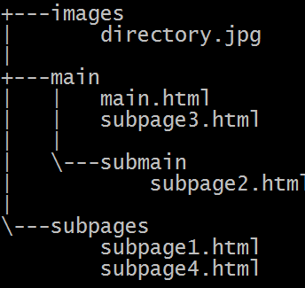

Relative Path Examples
Image path: ../images/directory.jpg

Subpage1: one directory up, then subdirectory (../subpages/subpage1.html)
Subpage2: subdirectory in current directory (submain/subpage2.html)
Subpage3: same directory as current directory (subpage3.html)